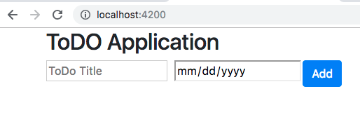
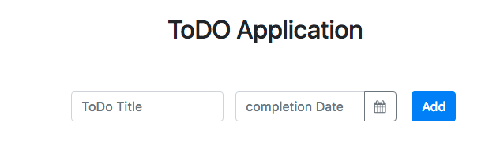

Kemampuan Akhir Yang Direncanakan
- Peserta mampu membuat Form TODO
- peserta mampu membuat datepicker https://ng-bootstrap.github.io/#/components/datepicker/overview
Percobaan membuat Form
- buka file app.component.html tambahkan code berikut
<div class="container">
<div class="row"><h2 class="title">ToDO Application</h2></div>
<div class="row">
<form class="form-inline">
<div class="form-row">
<div class="col-md-5">
<input type="text" name="" value="" placeholder="ToDo Title" />
</div>
<div class="col-md-5"><input type="date" /></div>
<div class="col-md-2"><button class="btn btn-primary">Add</button></div>
</div>
</form>
</div>
</div>
- jika berhasil maka hasilnya seperti pada gambar berikut 
menambahkan datepicker
- https://ng-bootstrap.github.io/#/components/datepicker/overview
- copy code datepicker berikut dan paste ke app.component.html
<div class="form-group">
<div class="input-group">
<input class="form-control" placeholder="yyyy-mm-dd"
name="dp" [(ngModel)]="model" ngbDatepicker #d="ngbDatepicker">
<div class="input-group-append">
<button class="btn btn-outline-secondary calendar" (click)="d.toggle()" type="button"></button>
</div>
</div>
</div>
- buka file app.component.html dan modifikasi menjadi seperti pada gambar berikut
<div class="container">
<div class="row"><h2 class="title">ToDO Application</h2></div>
<div class="row">
<form class="form-inline">
<div class="form-row">
<div class="col-md-5">
<input type="text" name="title" class="form-control" placeholder="ToDo Title" autocomplete="off"/>
</div>
<div class="col-md-5">
<!-- <input type="date" /> -->
<div class="form-group">
<div class="input-group">
<input class="form-control" placeholder="completion Date"
name="dp" ngbDatepicker #d="ngbDatepicker" autocomplete="off">
<div class="input-group-append">
<button class="btn btn-outline-secondary calendar" (click)="d.toggle()" type="button">
<i class="fa fa-calendar" aria-hidden="true"></i>
</button>
</div>
</div>
</div>
</div>
<div class="col-md-2"><button class="btn btn-primary">Add</button></div>
</div>
</form>
</div>
</div>
- buka file app.component.css tambahkan code berikut
body {
font-size: 15px;
color: #343d44;
font-family: 'segoe-ui', 'open-sans', tahoma, arial;
padding: 0;
margin: 0;
}
.container {
margin: 0 auto;
text-align: center;
}
.row {
margin: 0 auto;
text-align: center;
padding: 30px;
}
.title {
margin: 0 auto;
text-align: center;
}
.form-inline {
margin: 0 auto;
text-align: center;
}
table {
border-collapse: separate;
border-spacing: 0 5px;
}
thead th {
background-color: #007bff;
color: white;
}
tbody td {
background-color: #eeeeee;
}
tr td:first-child,
tr th:first-child {
border-top-left-radius: 6px;
border-bottom-left-radius: 6px;
}
tr td:last-child,
tr th:last-child {
border-top-right-radius: 6px;
border-bottom-right-radius: 6px;
}
.btn {
cursor: pointer;
}
td {
white-space: nowrap;
overflow: hidden;
}
.icons button {
margin: 0px 5px 0px 5px;
}
.fa-circle-o,
.fa-check-circle {
color: #007bff;
}
.empty {
border: 1px solid red;
}
https://www.npmjs.com/package/angular-font-awesome install angular-font-awesome untuk menampillakn fa fa-calender
ketik perintah berikut:
npm install --save font-awesome angular-font-awesome
- buka file app.module.ts tambahkan code berikut
//...
import { AngularFontAwesomeModule } from 'angular-font-awesome';
@NgModule({
//...
imports: [
//...
AngularFontAwesomeModule
],
//...
})
export class AppModule { }
- buka file angular.json tambahkan code berikut
"styles": [
"node_modules/bootstrap/dist/css/bootstrap.min.css",
"node_modules/font-awesome/css/font-awesome.css",
"src/styles.css"
],
- jika berhasil maka tampilannya akan seperti pada gambar dibawah ini 